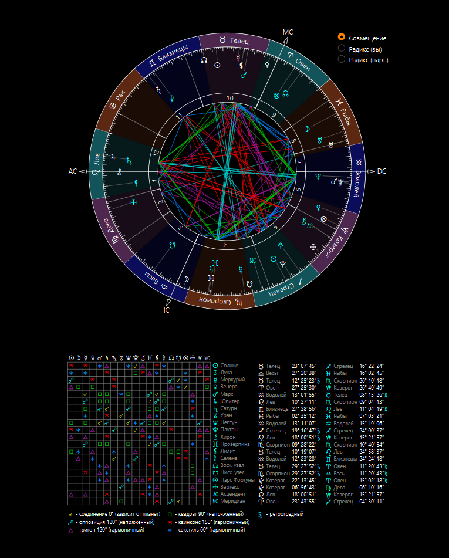
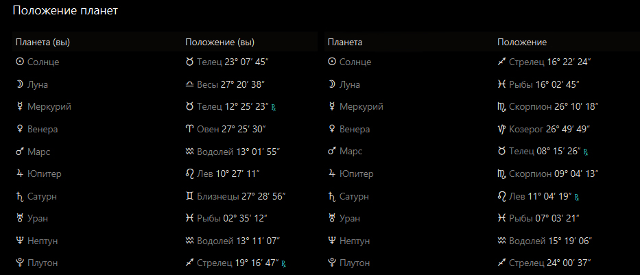

VOGUE
Nastya Edition — Special Issue



Этот аспект показывает, что в вашей дружбе может возникать много разных взглядов, мнений и способов восприятия мира. Иногда вам бывает непросто сразу понять друг друга, потому что каждая из вас по-своему смотрит на ситуацию и по-разному выражает свои мысли.
Тем не менее именно это делает ваше общение интересным: вы можете многому учиться друг у друга, расширять кругозор и находить неожиданные решения. Со временем, если проявлять терпение и уважение к мнению друг друга, между вами формируется очень крепкое взаимопонимание.
Такой аспект особенно хорошо подходит для дружбы, совместных проектов, учебы, работы и любой деятельности, где важны идеи, обсуждения и интеллектуальная поддержка.
Этот аспект делает ваши отношения очень теплыми, гармоничными и приятными. Между вами легко возникает симпатия, доверие и искреннее желание поддерживать друг друга.
В вашей дружбе много взаимного уважения, заботы и комфортного общения. Вам приятно проводить время вместе, делиться мыслями, радоваться успехам друг друга и вдохновлять на новое. Часто вас объединяет любовь к красоте, эстетике, творчеству и всему, что приносит удовольствие и внутреннюю гармонию.
Вы хорошо чувствуете настроение друг друга и умеете создавать атмосферу уюта, легкости и поддержки. Такая совместимость прекрасно подходит как для крепкой дружбы, так и для успешного совместного дела.
Этот аспект может иногда создавать недопонимание или ощущение, что одна из вас смотрит на ситуацию слишком реально, а другая — более мечтательно и интуитивно. Из-за этого могут возникать сомнения, неясность или ощущение, что вас не до конца понимают.
Иногда одна из вас может ждать большей определенности, а другая предпочитает действовать мягче и не спешить с выводами. Важно не строить лишних ожиданий и стараться открыто обсуждать свои чувства и мысли.
При внимательном отношении друг к другу этот аспект помогает развивать чуткость, интуицию и умение принимать разные стороны характера. Главное — честность, доверие и спокойный диалог.
Этот аспект делает ваше общение живым, энергичным и насыщенным. Вы умеете вдохновлять друг друга на действия, быстро обмениваться идеями и вместе находить решения даже в сложных ситуациях.
Одна из вас может чаще предлагать идеи, а другая — помогать быстрее воплощать их в жизнь. Вместе вы способны хорошо работать в команде, поддерживать друг друга в учебе, делах и личных целях.
Иногда из-за разницы в темпе принятия решений могут возникать споры: одна хочет действовать сразу, а другая предпочитает сначала всё тщательно обдумать. Но при взаимном уважении это становится не проблемой, а сильной стороной вашей дружбы.
Этот аспект часто проявляется в долгих разговорах, обсуждениях и даже дружеских спорах на самые разные темы. У вас может быть разный взгляд на жизнь: одна больше обращает внимание на детали и практичность, а другая — на большие идеи, мечты и перспективы.
Иногда из-за этого бывает сложно сразу прийти к общему мнению, но именно такие различия делают ваше общение интересным и развивающим. Вы можете вдохновлять друг друга смотреть на привычные вещи шире и глубже.
Этот аспект особенно хорош для совместных поездок, прогулок, обсуждений планов и творческих идей. Главное — не спорить ради спора, а слышать друг друга.
Этот аспект показывает, что в общении между вами иногда может ощущаться разница в подходах: одна из вас мыслит легче и свободнее, а другая больше ценит порядок, логику и серьезность.
Из-за этого временами могут возникать недопонимания: кому-то может казаться, что другая слишком строга или критична, а другой — что не хватает ответственности или практичности.
Однако именно такая разница помогает вам расти. Одна учит смотреть на вещи спокойнее и основательнее, а другая — легче относиться к жизни и не бояться новых идей. При уважении к особенностям друг друга этот аспект делает дружбу более зрелой и устойчивой.
Этот аспект считается одним из самых благоприятных для дружбы, особенно если вас объединяет интеллектуальное общение, общие интересы и желание развиваться. Между вами легко возникает ощущение, что вы понимаете друг друга почти с полуслова.
Вы вдохновляете друг друга на новые идеи, открытия и нестандартный взгляд на привычные вещи. Общение получается живым, интересным и наполненным взаимной поддержкой. Вам может быть особенно комфортно вместе в учебе, творчестве, совместных проектах и любых делах, где важны свобода мышления и оригинальность.
Этот аспект может создавать небольшую путаницу в общении: иногда одна из вас мыслит более рационально и конкретно, а другая больше доверяет интуиции, эмоциям и внутренним ощущениям.
Из-за этого временами бывает сложно сразу понять друг друга — кто-то может казаться слишком практичным, а кто-то, наоборот, слишком мечтательным. Возможны недосказанности, неверные ожидания или ощущение, что вас слышат не совсем так, как хотелось бы.
Этот аспект говорит о том, что ваши вкусы, привычки и способы проявления симпатии могут заметно отличаться. То, что для одной кажется важным и естественным, другая может воспринимать совсем иначе.
Иногда это проявляется в мелочах: разные взгляды на отдых, стиль общения, отношение к подаркам. Однако именно через такие различия вы учитесь лучше понимать друг друга и уважать чужие особенности.
Этот аспект делает дружбу глубокой, искренней и очень значимой для обеих. Между вами может быть сильное доверие, ощущение внутренней близости и готовность поддерживать друг друга даже в непростые периоды жизни.
Вы помогаете друг другу лучше понимать себя, становиться увереннее и эмоционально сильнее. Такая дружба часто ощущается как важная и судьбоносная: в ней много поддержки, честности и настоящей вовлеченности в жизнь друг друга.
Этот аспект показывает, что у вас может быть очень разный темперамент и способ действовать. Обе вы сильные, активные и умеете отстаивать свою точку зрения, поэтому иногда споры могут возникать даже из-за мелочей.
Но при правильном подходе этот аспект может стать источником роста: вы учитесь уважать чужую силу характера, договариваться и находить баланс между инициативой и компромиссом.
Этот аспект делает отношения энергичными, но временами немного импульсивными. Вместе вы можете вдохновлять друг друга на смелые идеи, спонтанные решения и новые впечатления, но иногда из-за этого возникает излишняя поспешность.
Этот аспект показывает, что в вашей дружбе могут сталкиваться разные подходы к действиям и ответственности. Одна из вас может быть более импульсивной, а другая — предпочитать осторожность, порядок и продуманный подход.
Этот аспект делает вашу дружбу эмоционально насыщенной и интуитивной. Вы можете тонко чувствовать настроение друг друга, поддерживать в сложные моменты и вдохновлять на внутренние перемены.
Этот аспект говорит о том, что ваши взгляды на жизнь, планы и ценности могут заметно отличаться. У каждой из вас свой подход к развитию, отдыху и тому, что считается важным.
Этот аспект хорошо подходит для надежной и стабильной дружбы, особенно если вас объединяют общие цели, учеба, работа или серьезные планы на будущее. Вместе вы хорошо дополняете друг друга и можете быть отличной командой.
Этот аспект показывает, что в дружбе могут возникать разные взгляды на мечты, ожидания и жизненные идеалы. Одна из вас может быть более практичной, а другая — больше доверять вдохновению.
Этот аспект может делать дружбу непростой в вопросах контроля, ответственности и личных границ. Но он также помогает учиться уважать силу характера друг друга и строить отношения на честности.
Эти аспекты поколений говорят о схожем взгляде на жизнь и схожем восприятии многих тем. В вашей дружбе много свободы, легкости и ощущения, что рядом человек “на одной волне”. Вы легко понимаете друг друга, потому что проходите через похожие внутренние изменения.
Ваша совместимость больше похожа на сильную, насыщенную и многогранную дружбу, чем на легкое поверхностное общение. Между вами есть как гармоничные аспекты, которые дают поддержку, доверие и настоящее взаимопонимание, так и напряженные моменты, которые учат терпению, уважению к различиям и умению договариваться.
Вы можете вдохновлять друг друга, помогать расти, поддерживать в сложные периоды и вместе проходить важные жизненные этапы. Это дружба, в которой есть потенциал для долгой, крепкой связи, если обе стороны ценят искренность и готовы принимать друг друга такими, какие вы есть.